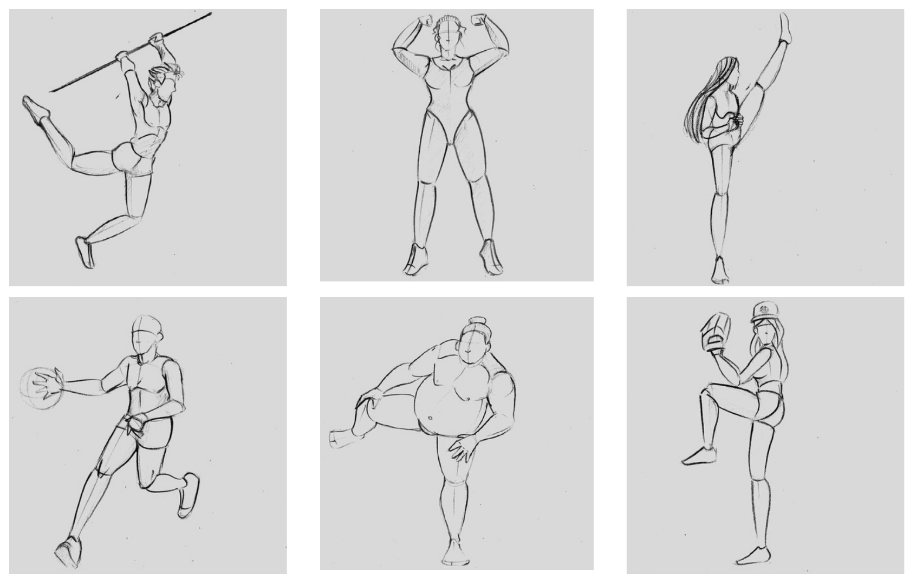
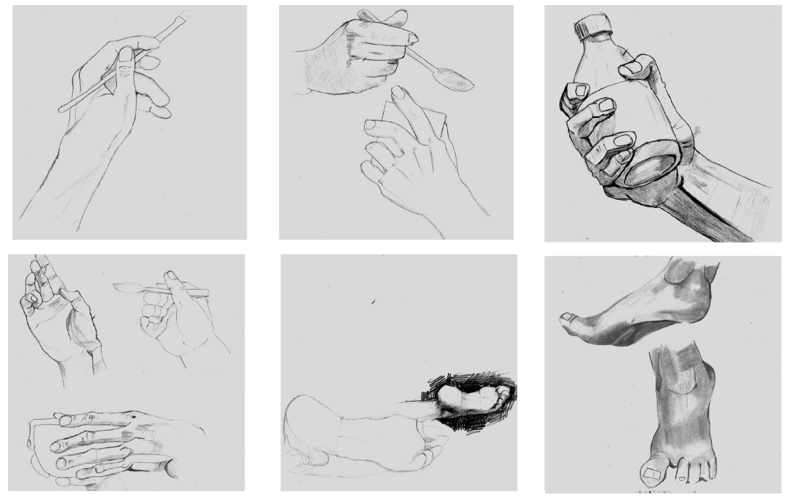
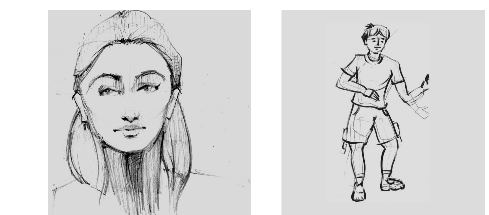
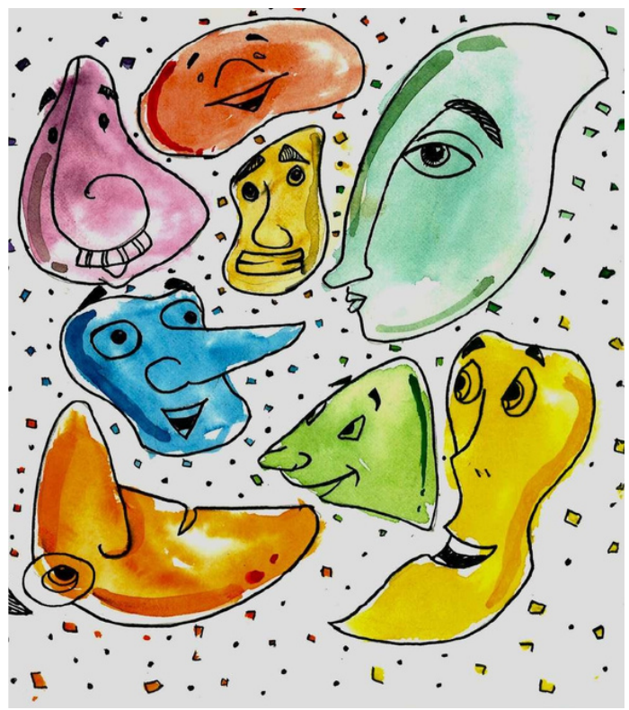
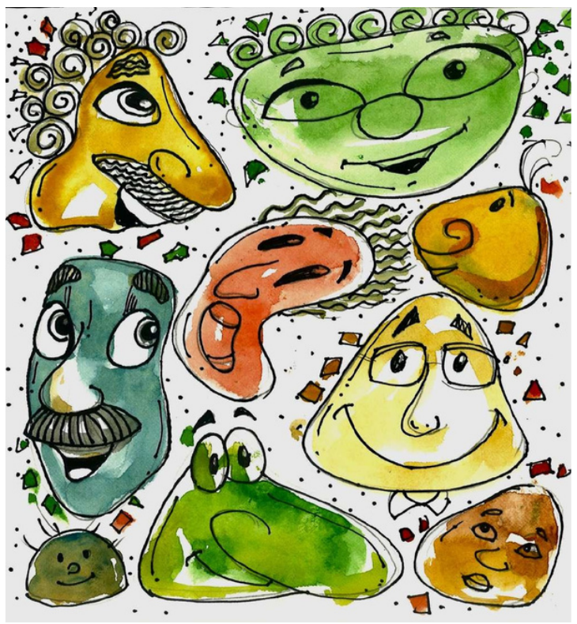
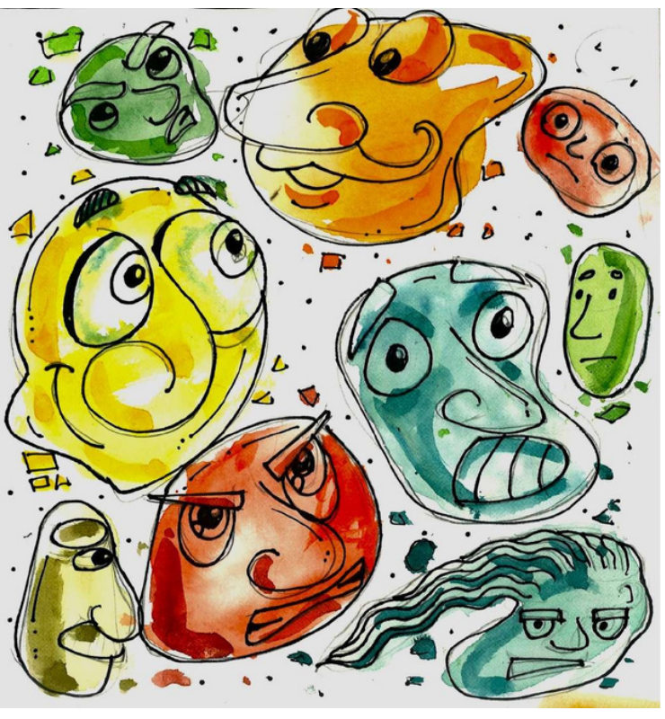
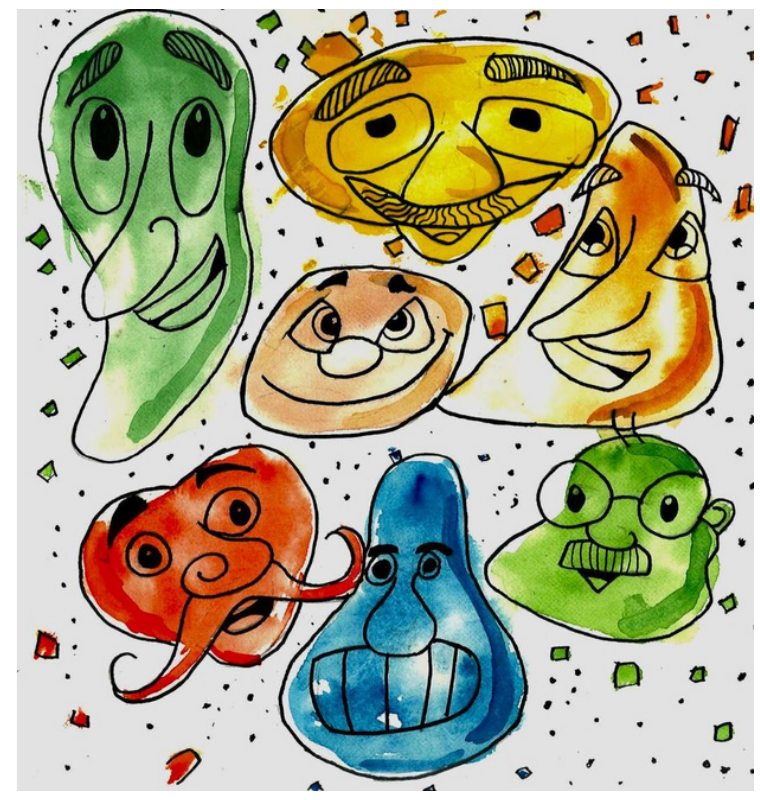
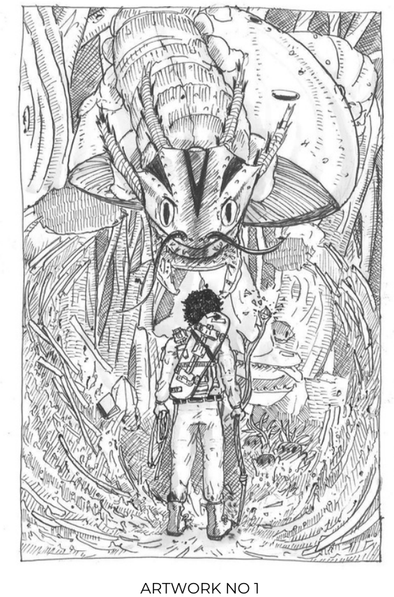
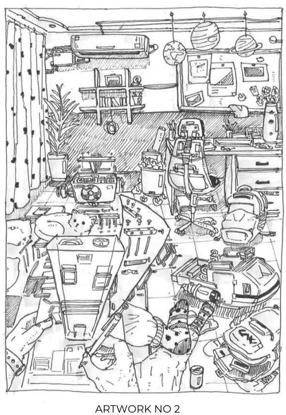

Life and photo reference studies, expression exploration, and imaginative environment drawings — the groundwork behind the character work.
← Back to homeThese are some of my live and photo reference drawings, done to understand human anatomy better — full figures, hands, feet, and faces in a range of poses.



These are the expression sheets in which I drew random lines, shapes and colour blobs, then developed them into cartoon faces with expressions.




These are environment drawings in which I tried to show spaces creatively, with some imaginary and fantasy characters. These drawings also helped me understand perspective better.

